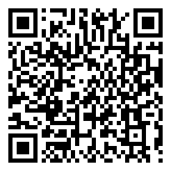

📲 maumm.org 앱 내려받기
안드로이드 휴대폰에 설치하는 앱이에요. 아이폰 · PC는 ‘웹으로 열기’를 써 주세요. PC 화면에서는 QR 코드를 휴대폰 카메라로 찍으면 바로 받아져요.
마음 살림직원 수요조사 · 결재 라인 · 쿠팡 결제 · 구매 알림
Nurse United수간호사 인사평가 · 성장 컨설팅 (Firebase 로그인)
마음비타민 탁구탁구교실 출석 · 심사 · 리그 · 스탯
나의 마음 다이어리마음 날씨 · 마음 플레이리스트 · 마음 탐정
마음 이음위기 연결 · 보호자 교육 · 마음 연습(게임 CBT) · 절차조력

설치 방법 (안드로이드)
- ‘앱 받기’를 누르면 파일(.apk)을 내려받아요. “유해한 파일일 수도 있음”이 뜨면 무시하고 다운로드를 눌러요.
- 받은 파일을 누르고 설치를 눌러요. 처음이면 “출처를 알 수 없는 앱” 설정에서 이 출처 허용을 켜 주세요.
- “앱 설치가 권장되지 않음”이 뜨면 무시하고 설치를 눌러요. Google Play 프로텍트가 검사한 뒤 설치돼요.
- 새 버전도 같은 링크에서 받아 덮어 설치하면 돼요. 기록은 그대로 남아요.
설치가 번거로우면 웹으로 열기 → 홈 화면에 추가로 써도 같은 기능을 써요. (구매 시기 알림은 설치한 앱에서만 떠요)
maumm.org